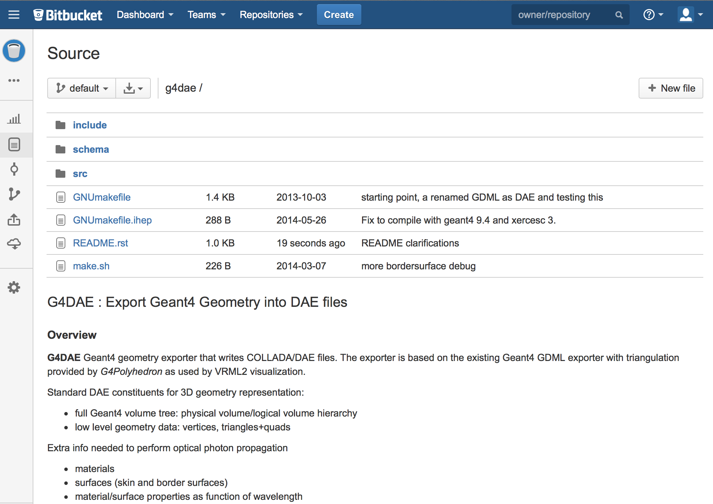
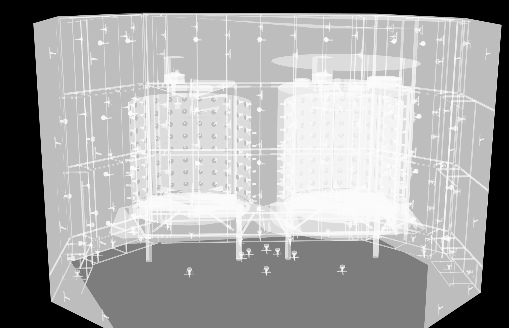
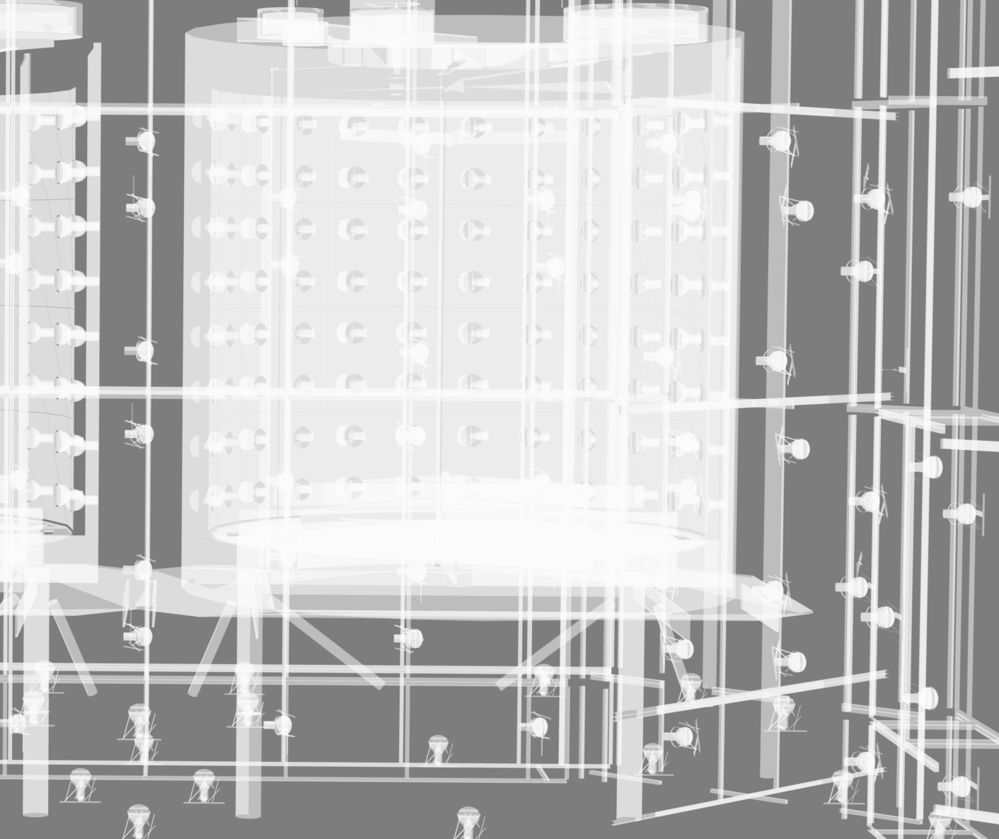
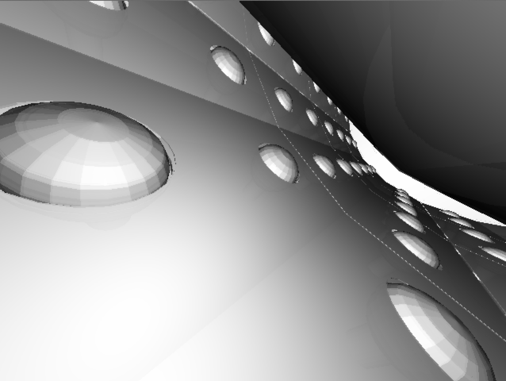
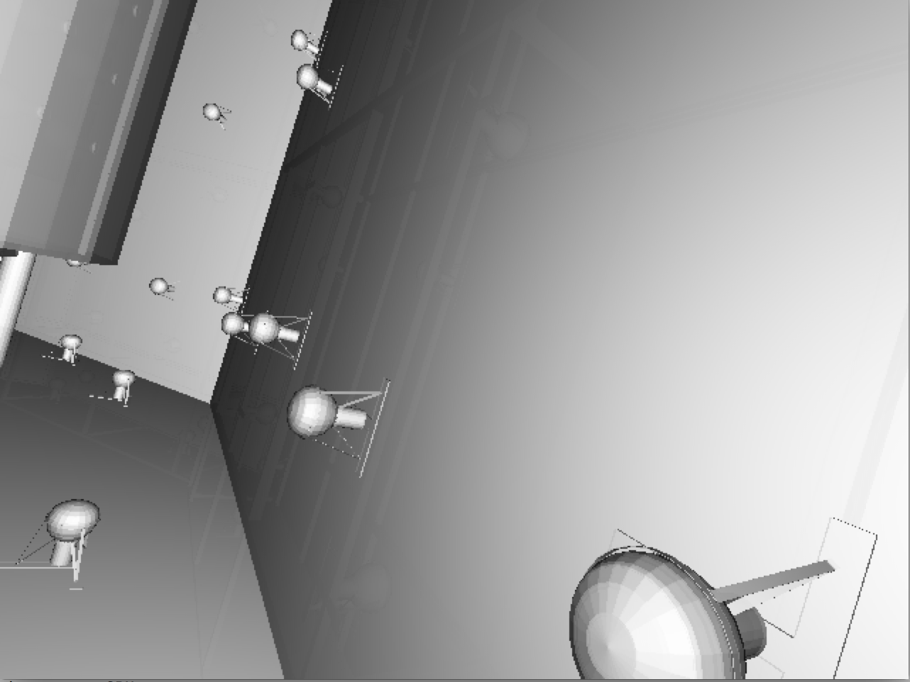
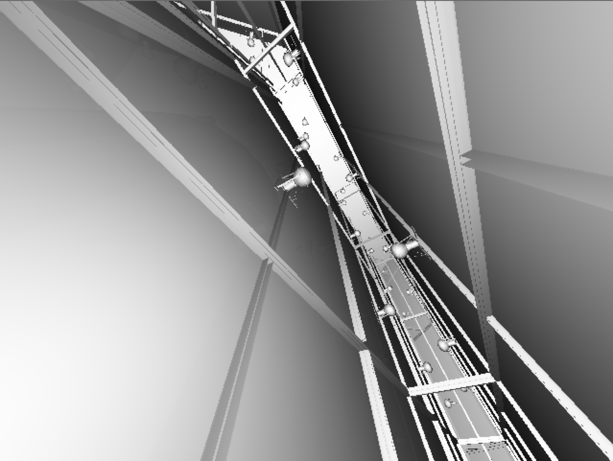
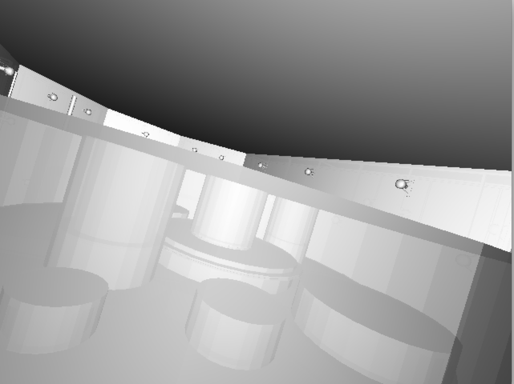

Chroma : Ultra-fast Photon MC
Developed by Stan Seibert, University of Pennsylvania.
Chroma tracks photons through a triangle-mesh detector geometry,
simulating processes like diffuse and specular reflections,
refraction, Rayleigh scattering and absorption. Using triangle meshes
eliminate geometry code as just one code path.
200x performance claim:
With a CUDA GPU Chroma has propagated 2.5M photons per second
in a detector with 29k photomultiplier tubes. This is
200x faster than GEANT4.
BUT: Chroma needs : triangles + inside/outside materials
http://on-demand.gputechconf.com/gtc/2013/presentations/S3304-Particle-Physics-With-PyCUDA.pdf
Export any Geant4 Geometry into COLLADA/DAE standard 3D files, including:
- volume tree: physical volume/logical volume heirarchy
- geometry: vertices, triangles+quads
- materials and surfaces with properties as function of wavelength

G4DAE : DayaBay/NuWa integration
G4DAE capable NuWa: ./dybinst -X geant4_with_dae trunk all
Greenfield dybinstallation required
NuWa LCG_builder grabs g4dae from bitbucket see
NuWa-trunk/lcgcmt/LCG_Builders/geant4/scripts/geant4_config.sh
G4DAE : Export Compared to VRML2(WRL)
- Comparison of all vertices/faces reveals boolean solids are discrepant.
- Perfect agreement only achieved by cheating : perform triangulation once and reuse.
| Qty |
DayaBay |
Lingao |
Far |
Juno x0.5 |
|---|
| Volumes |
12,229 |
12,229 |
18,903 |
25,000 |
| Triangles |
2,448,064 |
2,448,064 |
4,189,680 |
21,886,158 |
| Vertices |
1,245,996 |
1,245,996 |
2,128,208 |
10,993,079 |
| DAE/GDML/WRL (MB) |
6.9/4.0/98 |
6.9/4.0/96 |
8.6/6.0/167 |
6.1M/-/- |
VGDX_20140414 counts using g4daeview.py -g 0: --with-chroma, Juno geometry truncated
- Triangulation sensitivity impact needs checking
- DAE not much bigger than GDML, but includes all triangles/vertices
- Stability + efficiency improvements, enabling mobile development
- Add recording of propagation steps into VBO datastructure
- Animated visualization

Chroma Raycasting : exercises geometry intersection
Raycasting exercises slowest part of optical photon propagation: geometry intersection.

- Shoot rays thru every pixel out into geometry, 1 CUDA thread for each, typically >1M rays
- Find triangle intersections using BVH acceleration structure
- Determine color based on ray to triangle normal angle
- Alpha blend nearest 10 surfaces, providing transparency effect
Chroma Stability/Efficiency Improvements Made
Split work into multiple CUDA kernel launch, arranged in 2D pattern
- avoids kernel launch times exceeding 5 seconds
- 2D equalizes thread workload across CUDA warp(32 threads)
Reduced CPU load by reducing transfers
- create pixels on GPU, share between OpenGL and CUDA/Chroma
- compute photon directions via 4x4 uniform matrix rather than passing arrays
- change matrix to navigate, rather than array manipulating kernel launches
These improvements were necessary as Chroma Camera with Dayabay geometry had
- very heavy CPU load and unusably laggy GUI
- frequent GPU panic, GUI freeze, hard system crash forcing reboot
Chroma Raycast Worst Case (~entire geometry) Example
Render Split into 3x3 CUDA kernel launches, 1 thread per pixel, ~1.8s for 1.23M pixels, 2.4M tris.

g4daeview.py --target=.. --eye="-0.3,-1.1,1.7" --look="0.1,0.4,-0.6" --up="1.2,2.0,1.6" --size=1440,852 --near=30.00000 --far=10000.0 --yfov=50.0 --with-chroma
Chroma Raycast Triangle count (Dyb with RPC)
g4daeview.py --with-chroma --metric tri --flags 1,0 # tri/time/intersect

All triangle intersections made, even when no visible contribution to render. (Potential for optimisation?)
g4daeview.py : Fast OpenGL 3D viewer for G4DAE files
G4DAE visualization and "backbone" application for Chroma testing.
- very fast/responsive 3D OpenGL visualization
- flexible tree/list based partial geometry loading
- intuitive virtual trackball translate/rotate
- parallel or perspective projections
- interactive fov and near/far plane clipping
- persistent viewpoint bookmarks
- animation by interpolation between bookmarks or orbiting
- numerical control via UDP remote messaging
- Chroma interactive raycasting, including animated
- live Geant4 connection, photon visualization, single stepping
- easily extensible python implementation
- Chroma propagation visualization, with time slider
- photon picking interface, with property inspection
g4daeview.py : Dayabay Chroma Photon Propagation
Chroma GPU photon propagation at 12 nanoseconds. The photons are generated by Geant4
simulation of a 100 GeV muon travelling from right to left.
Photon colors indicate reemission (green), absorption(red),
specular reflection (magenta), scattering(blue), no history (white).

g4daeview.py : Dayabay Chroma Photon Propagation
Chroma GPU photon propagation at 14 nanoseconds.
The interface provides interactive control of the propagation time
allowing any stage of the propagation to be viewed by
scrubbing time backwards/forwards. The speed of this visualization
is achieved by interoperation of CUDA kernels and OpenGL shaders accessing
the same GPU resident photon propagation data.

g4daeview.py : Photon Selection Interface
Propagation steps OR photons can be selected by materials, propagation history, or special selection by photon identifier.
Photons can be selected by clicking their 3D representations allowing inspection of the
propagation history of individual photons.

g4daeview.py : Propagation Step Selection Interface
Photon propagation steps with material pair GdDopedLS,Acrylic. The larger
squares represent selected photons, providing access to numerical details of propagation history.

g4daeview.py : Individual Photon Selection
Propagation steps of a single photon, the steps at either sides of the inner
and outer acrylic vessels are visible. The line color represents the photon
history starting white and turning magenta following a specular reflection.

g4daeview.py : Initial Photon Positions
Initial photon positions of a Geant4 simulated muon that crosses
between the Dayabay Near hall ADs. Colors represent photon wavelengths.

g4daeview.py : OpenGL view of Juno Geometry
External view of Juno geometry with cutaway. The extreme size of the Juno geometry (50 million nodes in Chroma representation)
provides a challenge for development on mobile GPUs.
As my developments operate at the Geant4 level wherever possible it
was relatively straightforward to apply the machinery developed for
Dayabay to the Juno detector. In collaboration with
Juno simulation experts the geometry was exported from
Geant4 and GPU visualized in under a days work.

g4daeview.py : Chroma Raycast of Juno Geometry
External view of Juno geometry. The extreme size of the Juno geometry (50 million nodes in Chroma representation)
provides a challenge for development on mobile GPUs. The black rectangle arises due to aborts to avoid GPU
crashes.

g4daeview.py : Video Tour
Runtime Geant4/Chroma integration with ZMQRoot
ZMQRoot sends/receives ChromaPhotonList, 3 node
- client
- nuwa.py/Geant4 live collect/send/receive photons
- broker
- czmq_broker.sh routes requests, returns replies
- worker
- g4daeview.py/Chroma photon visualization/Chroma stepping
Status/Issues for Steps 1,2,3
Export G4 Geometry as DAE
- boolean solid triangulation sensitivity a future systematic
- pointer addresses used in identifiers attempt to eliminate
DAE to Chroma
- material/surface properties, mapping choices validation,
- Geant4/Chroma model mismatch causes all 8 bordersurfaces including ESR mirrors to be omitted
add double sided surfaces to Chroma model
- remove GPU geometry duplication between OpenGL and Chroma, mandatory
for Juno (less so for Dayabay)
Chroma Validation
- raycasting: stability issue resolved using OpenGL/CUDA interop
- propagation visualization provides qualitative confidence
- also the visualization provides a working environment within which the details
of matching Geant4/Chroma models can be done
Status/Issues for Step 4 : G4/Chroma Runtime Integration
Geant4 -> Chroma in development, 1/1000 photon scaledown
- messaging operational
- add compression
- push to full photon operation
Chroma -> Geant4
- photon information returned from Chroma to Geant4 is technically operational
- various techniques of merging detected
photon info back into Geant4/NuWa need to be investigated.
G4DAE Dayabay Near Site

OSX Preview.app render
G4DAE Dayabay AD

OSX Preview.app render
Chroma Ray Tracing Dayabay Geometry (1)

Chroma Ray Tracing Dayabay Geometry (2)

Chroma Ray Tracing Dayabay Geometry (3)

Chroma Ray Tracing Dayabay Geometry (4)

G4DAE viewer : Pool Bottom
G4DAE viewer : Pool Bottom, Chroma Raycast
Chroma : Hardware requirements
- NVIDIA GPU with CUDA Compute Capability (CCC) 2.0 at least
- 1.5G of GPU memory (estimated minimum for Dayabay geometry)